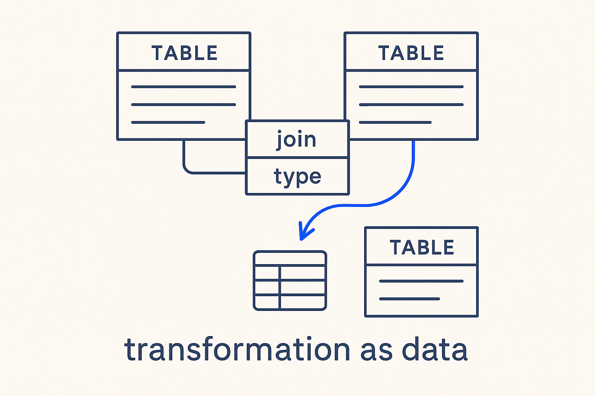

How data moves and changes, modeled as data — the FROM clause, the joins, the SELECT list, filters and time all captured as metadata instead of buried in hand-written SQL.

> How data moves and changes, modeled as data — the FROM clause, the joins, the SELECT list, filters and time all captured as metadata instead of buried in hand-written SQL.
Transformation is the half of modeling that the classic tools never solved. Structure got boxes and lines; the logic that turns sources into targets ended up in code — and in practice, in complex, inconsistent SQL where logic is copy-pasted, data-quality fixes are tangled with functional rules, time handling is ad-hoc, and there is no clear layering. Change one thing and you can't tell what breaks, because the intent was never modeled — only the SQL was written.
Transformation metadata models it explicitly. Every clause of a query becomes a structured object: the FROM/JOIN with its type and cardinality, the SELECT list as column-level mappings, the WHERE as filter expressions, the GROUP BY, the window functions, the time policy. The SQL is then *generated* from that metadata, deterministically — identical, repeatable output from the same source. Because the mapping is data, column-level lineage and impact analysis fall out as queries, and the logic stays consistent and layered instead of scattered across a thousand bespoke statements.
This is where structure and movement finally meet: the transformation is modeled with the same rigor as the structure, so “how does this value get computed, and what does changing it affect?” is something you can ask the model — not something you reverse-engineer from SQL.
The FROM clause as data: A join isn't a line of SQL here — it's a row. Ask "which sources feed this entity, with what join type and cardinality?" and it's a query, not a read-through of a query.
SELECT e.entity_name AS target,
em.source_table,
em.join_type,
em.join_cardinality
FROM metadata.entity_mapping em
JOIN metadata.entity e ON e.entity_id = em.entity_id;